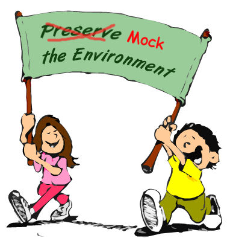

class: center, middle # Black-box testing ### Adam Niedzielski --- class: center ## About me Ruby on Rails Developer @goodylabs twitter: @niedzielskiadam blog: adamniedzielski.github.io --- ## white-box <img src="mysql.png" class="white-box-image"/> --- ## black-box --- ## capybara ```ruby visit('/users/sign_in') fill_in 'Login', :with => 'user@example.com' fill_in 'Password', :with => 'password' click_link 'Sign in' expect(page).to have_content('Success!') ``` --- ## Real user "Capybara helps you test web applications by simulating how a real user would interact with your app. [...]" from capybara README --- ## Real user? ```ruby describe "Edit post page" do context "when user is the creator of the post" do before do user = FactoryGirl.create(:user) login_as(user, :scope => :user) @post = FactoryGirl.create(:post, :user => user) visit edit_post_path(@post) end it "shows previous content of the post" do expect(page).to have_content(@post.content) end end end ``` --- ## black-box testing Android ```ruby # see https://github.com/calabash/calabash-android query("edittext index:1", :setText => "test@example.com") wait_for(:timeout => 5) { element_exists("button marked:'Save'") } touch("* marked:'Save'") check_element_exists("view marked:'confirmation'") ``` --- ## The results * strong coupling * dependent on API responses * slooow * fragile tests --- ## Lessons learned  ??? * black-box AND white-box * mocking (in white-box) * simple scenarios --- ## When it adds value * all parts combined * key business scenario --- ## How to black-box <span style="font-size: 80px; text-align: center;"><span style="color:#ff0000;">h</span><span style="color:#ff7100;">a</span><span style="color:#ffa900;">p</span><span style="color:#fff800;">p</span><span style="color:#8bff00;">y</span><span style="color:#00ff07;"> </span><span style="color:#00ff9a;">p</span><span style="color:#00ffe8;">a</span><span style="color:#00ddff;">t</span><span style="color:#0040ff;">h</span></span> ??? * bored QA Engineer * very, very happy path --- class: center ## Summary blog: adamniedzielski.github.io twitter: @niedzielskiadam .footnote[slides done with remark]